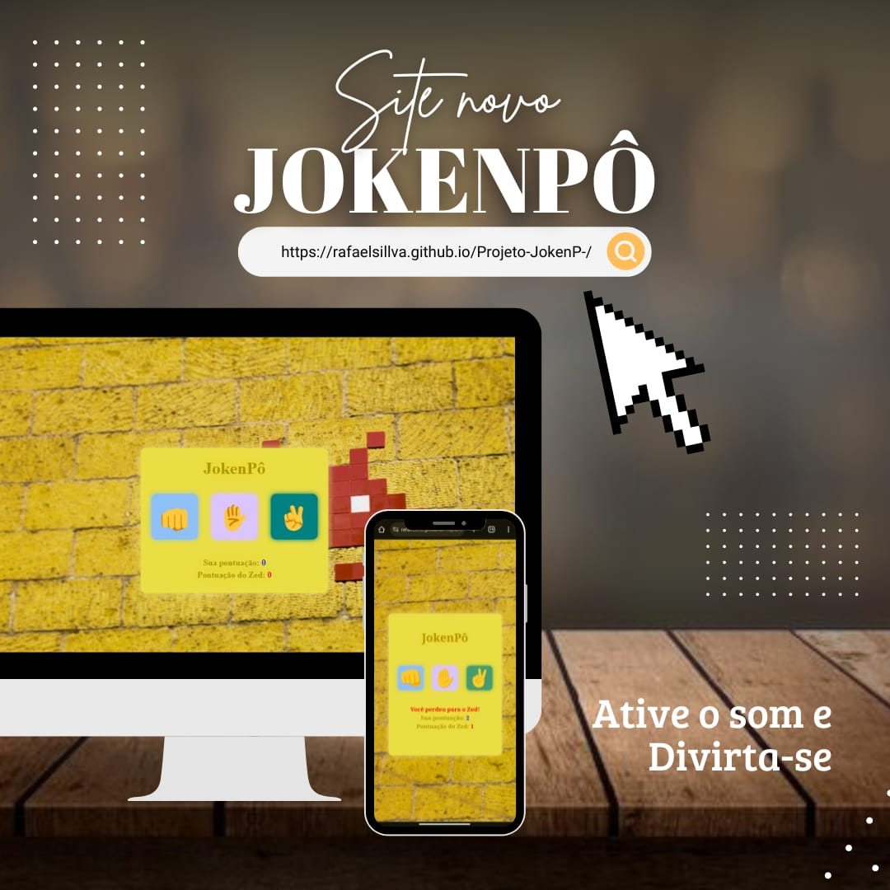

Ultimos Projetos



Seja bem-vindo ao meu espaço digital!
Sou Rafael, programador web especializado em criar soluções
inteligentes e intuitivas para a web. Com experiência em
desenvolvimento front-end e foco em garantir a melhor experiência para
os usuários, estou sempre em busca
de novos desafios e oportunidades.
Navegue à vontade e conheça
mais sobre meus projetos.
Se tiver alguma dúvida ou quiser conversar sobre ideias, estou aqui!
Fique à vontade para entrar em contato e me seguir nas redes Sociais.
Sou Rafael, um jovem de 25 anos apaixonado por tecnologia e
desenvolvimento web. Atualmente, estudo programação e me dedico a
criar projetos que aliam funcionalidade e design. Além disso, trabalho
como freelancer, desenvolvendo soluções personalizadas para atender às
necessidades dos meus clientes.
Estou sempre em busca de novos desafios e oportunidades para aprender
mais e aprimorar minhas habilidades. Sinta-se à vontade para explorar
meu portfólio e, se tiver alguma ideia ou projeto em mente, estou à
disposição para colaborar!
Como programador web e freelancer, ofereço serviços específicos para
criar soluções digitais eficientes e personalizadas:
Front-end: Construção do site;
Projetos Personalizados: criação do designer e
responsividade;
Otimização de Websites: Melhoria do site;
Manutenção e Suporte: Acompanhamento do site e manutenção;
Estou sempre aberto a novos projetos e prontos para oferecer
soluções que tragam resultados.
Se você precisa de algo único
ou deseja discutir uma ideia, entre em contato!